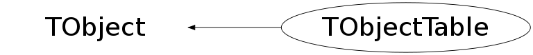

class TObjectTable: public TObject
This class registers all instances of TObject and its derived classes in a hash table. The Add() and Remove() members are called from the TObject ctor and dtor, repectively. Using the Print() member one can see all currently active objects in the system. Using the resource (in .rootrc): Root.ObjectStat one can toggle this feature on or off. Using the compile option R__NOSTATS one can de-active this feature for the entire system (for maximum performance in highly time critical applications). The following output has been produced in a ROOT interactive session via the command gObjectTable->Print() class cnt on heap size total size heap size TKey 4 4 72 288 288 TClass 84 84 80 6720 6720 TDataMember 276 276 24 6624 6624 TObject 11 11 12 132 132 TMethod 1974 1974 64 126336 126336 TDataType 34 34 56 1904 1904 TList 2328 2328 36 83808 83808 TH1F 1 1 448 448 448 TText 2688 2688 56 150528 150528 TGaxis 1 0 120 120 0 TAxis 6 3 88 528 264 TBox 57 57 52 2964 2964 TLine 118 118 40 4720 4720 TWbox 1 1 56 56 56 TArrow 1 1 64 64 64 TPaveText 59 59 124 7316 7316 TPave 1 1 92 92 92 TFile 1 1 136 136 136 TCanvas 3 3 444 1332 1332 TPad 1 1 312 312 312 TContextMenu 3 3 48 144 144 TMethodArg 2166 2166 44 95304 95304 TPaveLabel 1 1 120 120 120 THtml 1 1 32 32 32 TROOT 1 0 208 208 0 TApplication 1 1 28 28 28 TFileHandler 1 1 20 20 20 TColor 163 163 40 6520 6520 TStyle 1 1 364 364 364 TRealData 117 117 28 3276 3276 TBaseClass 88 88 36 3168 3168 THashList 5 5 40 200 200 THashTable 5 5 36 180 180 TGeometry 1 1 64 64 64 TLink 7 7 60 420 420 TPostScript 1 1 764 764 764 TMinuit 1 1 792 792 792 TStopwatch 1 0 56 56 0 TRootGuiFactory 1 1 28 28 28 TGX11 1 1 172 172 172 TUnixSystem 1 1 252 252 252 TSignalHandler 1 1 20 20 20 TOrdCollection 3 3 40 120 120 TEnv 1 1 24 24 24 TCint 1 1 208 208 208 TBenchmark 1 1 52 52 52 TClassTable 1 1 12 12 12 TObjectTable 1 1 12 12 12 Total: 10225 10219 5976 506988 506340
Function Members (Methods)
public:
| TObjectTable(Int_t tableSize = 100) | |
| virtual | ~TObjectTable() |
| void | TObject::AbstractMethod(const char* method) const |
| void | Add(TObject* obj) |
| static void | AddObj(TObject* obj) |
| virtual void | TObject::AppendPad(Option_t* option = "") |
| virtual void | TObject::Browse(TBrowser* b) |
| void* | CheckPtrAndWarn(const char* msg, void* vp) |
| static TClass* | Class() |
| virtual const char* | TObject::ClassName() const |
| virtual void | TObject::Clear(Option_t* = "") |
| virtual TObject* | TObject::Clone(const char* newname = "") const |
| virtual Int_t | TObject::Compare(const TObject* obj) const |
| virtual void | TObject::Copy(TObject& object) const |
| virtual void | Delete(Option_t* opt = "") |
| virtual Int_t | TObject::DistancetoPrimitive(Int_t px, Int_t py) |
| virtual void | TObject::Draw(Option_t* option = "") |
| virtual void | TObject::DrawClass() constMENU |
| virtual TObject* | TObject::DrawClone(Option_t* option = "") constMENU |
| virtual void | TObject::Dump() constMENU |
| virtual void | TObject::Error(const char* method, const char* msgfmt) const |
| virtual void | TObject::Execute(const char* method, const char* params, Int_t* error = 0) |
| virtual void | TObject::Execute(TMethod* method, TObjArray* params, Int_t* error = 0) |
| virtual void | TObject::ExecuteEvent(Int_t event, Int_t px, Int_t py) |
| virtual void | TObject::Fatal(const char* method, const char* msgfmt) const |
| virtual TObject* | TObject::FindObject(const char* name) const |
| virtual TObject* | TObject::FindObject(const TObject* obj) const |
| virtual Option_t* | TObject::GetDrawOption() const |
| static Long_t | TObject::GetDtorOnly() |
| virtual const char* | TObject::GetIconName() const |
| virtual const char* | TObject::GetName() const |
| virtual char* | TObject::GetObjectInfo(Int_t px, Int_t py) const |
| static Bool_t | TObject::GetObjectStat() |
| virtual Option_t* | TObject::GetOption() const |
| Int_t | GetSize() const |
| virtual const char* | TObject::GetTitle() const |
| virtual UInt_t | TObject::GetUniqueID() const |
| virtual Bool_t | TObject::HandleTimer(TTimer* timer) |
| virtual ULong_t | TObject::Hash() const |
| virtual void | TObject::Info(const char* method, const char* msgfmt) const |
| virtual Bool_t | TObject::InheritsFrom(const char* classname) const |
| virtual Bool_t | TObject::InheritsFrom(const TClass* cl) const |
| virtual void | TObject::Inspect() constMENU |
| Int_t | Instances() const |
| void | InstanceStatistics() const |
| void | TObject::InvertBit(UInt_t f) |
| virtual TClass* | IsA() const |
| virtual Bool_t | TObject::IsEqual(const TObject* obj) const |
| virtual Bool_t | TObject::IsFolder() const |
| Bool_t | TObject::IsOnHeap() const |
| virtual Bool_t | TObject::IsSortable() const |
| Bool_t | TObject::IsZombie() const |
| virtual void | TObject::ls(Option_t* option = "") const |
| void | TObject::MayNotUse(const char* method) const |
| virtual Bool_t | TObject::Notify() |
| void | TObject::Obsolete(const char* method, const char* asOfVers, const char* removedFromVers) const |
| static void | TObject::operator delete(void* ptr) |
| static void | TObject::operator delete(void* ptr, void* vp) |
| static void | TObject::operator delete[](void* ptr) |
| static void | TObject::operator delete[](void* ptr, void* vp) |
| void* | TObject::operator new(size_t sz) |
| void* | TObject::operator new(size_t sz, void* vp) |
| void* | TObject::operator new[](size_t sz) |
| void* | TObject::operator new[](size_t sz, void* vp) |
| virtual void | TObject::Paint(Option_t* option = "") |
| virtual void | TObject::Pop() |
| virtual void | Print(Option_t* option = "") const |
| Bool_t | PtrIsValid(TObject* op) |
| virtual Int_t | TObject::Read(const char* name) |
| virtual void | TObject::RecursiveRemove(TObject* obj) |
| void | Remove(TObject* obj) |
| void | RemoveQuietly(TObject* obj) |
| void | TObject::ResetBit(UInt_t f) |
| virtual void | TObject::SaveAs(const char* filename = "", Option_t* option = "") constMENU |
| virtual void | TObject::SavePrimitive(ostream& out, Option_t* option = "") |
| void | TObject::SetBit(UInt_t f) |
| void | TObject::SetBit(UInt_t f, Bool_t set) |
| virtual void | TObject::SetDrawOption(Option_t* option = "")MENU |
| static void | TObject::SetDtorOnly(void* obj) |
| static void | TObject::SetObjectStat(Bool_t stat) |
| virtual void | TObject::SetUniqueID(UInt_t uid) |
| virtual void | ShowMembers(TMemberInspector& insp) |
| void | Statistics() |
| virtual void | Streamer(TBuffer& b) |
| void | StreamerNVirtual(TBuffer& b) |
| virtual void | TObject::SysError(const char* method, const char* msgfmt) const |
| void | Terminate() |
| Bool_t | TObject::TestBit(UInt_t f) const |
| Int_t | TObject::TestBits(UInt_t f) const |
| void | UpdateInstCount() const |
| virtual void | TObject::UseCurrentStyle() |
| virtual void | TObject::Warning(const char* method, const char* msgfmt) const |
| virtual Int_t | TObject::Write(const char* name = 0, Int_t option = 0, Int_t bufsize = 0) |
| virtual Int_t | TObject::Write(const char* name = 0, Int_t option = 0, Int_t bufsize = 0) const |
protected:
| virtual void | TObject::DoError(int level, const char* location, const char* fmt, va_list va) const |
| void | TObject::MakeZombie() |
private:
| TObjectTable(const TObjectTable&) | |
| void | Expand(Int_t newsize) |
| Int_t | FindElement(TObject* obj) |
| void | FixCollisions(Int_t index) |
| Bool_t | HighWaterMark() |
| TObjectTable& | operator=(const TObjectTable&) |
Data Members
public:
| enum TObject::EStatusBits { | kCanDelete | |
| kMustCleanup | ||
| kObjInCanvas | ||
| kIsReferenced | ||
| kHasUUID | ||
| kCannotPick | ||
| kNoContextMenu | ||
| kInvalidObject | ||
| }; | ||
| enum TObject::[unnamed] { | kIsOnHeap | |
| kNotDeleted | ||
| kZombie | ||
| kBitMask | ||
| kSingleKey | ||
| kOverwrite | ||
| kWriteDelete | ||
| }; |
Class Charts
{kind=link}
{kind=link}
{kind=link}
{kind=link}

Function documentation
void Print(Option_t* option = "") const
Print the object table. If option ="all" prints the list of all objects with the format object number, pointer, class name, object name
void AddObj(TObject* obj)
Add an object to the global object table gObjectTable. If the global table does not exist create it first. This member function may only be used by TObject::TObject. Use Add() to add objects to any other TObjectTable object. This is a static function.
void RemoveQuietly(TObject* obj)
Remove an object from the object table. If op is 0 or not in the table don't complain. Currently only used by the TClonesArray dtor. Should not be used anywhere else, except in places where "special" allocation and de-allocation tricks are performed.
Int_t FindElement(TObject* obj)
Find an object in the object table. Returns the slot where to put the object. To test if the object is actually already in the table use PtrIsValid().
void * CheckPtrAndWarn(const char* msg, void* vp)
Issue a warning in case an object still appears in the table while it should not.
TObjectTable(const TObjectTable& )
TObjectTable& operator=(const TObjectTable& )